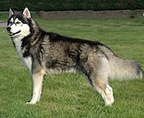
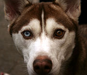
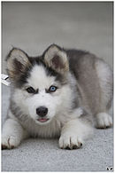

заводская специализированная порода собак, выведенная чукчами северо-восточной части Сибири и зарегистрированная американскими кинологами в 1930-х годах как ездовая собака, полученная от аборигенных собак Дальнего Востока России, в основном из Анадыря, Колымы, Камчатки у местных оседлых приморских племён — юкагиров, кереков, азиатских эскимосов и приморских чукчей — анкальын (приморские, поморы — от анкы (море))
Эта аборигенная ездовая собака Дальнего Востока является одной из древнейших пород собак. В настоящее время выведенная порода «сибирский хаски» используется не только как ездовая, но и как собака-компаньон и шоу-выставочная собака и собака поводырь.
|
Общий вид собаки породы сибирский хаски — это прежде всего облик легкости и быстроты. Это собака среднего роста, с компактным телосложением. При осмотре сбоку длина корпуса от плечелопаточного сочленения до седалищного бугра чуть больше высоты собаки в холке. Шерстный покров достаточно густой, с хорошо развитым подшерстком. Уши прямостоячие, хвост имеет форму пера. Собака прекрасно работает в упряжке, легко перевозит нетяжелые грузы. Животные выносливые, кобели внешне отличаются от самок более мощным костяком и пропорциями тела. Самки имеют более хрупкий и утонченный костяк, но назвать их слабыми нельзя. Если собак этой породы правильно кормить, они не имеют избыточного веса. |
 |
|
Грубая голова является недостатком этой породы, так же как и слишком легкая и утонченная голова. Расстояние от конца мочки носа до начала черепа должна равняться расстоянию от начала морды до затылка. Ширина морды средняя, губы имеют пигментацию и не должны быть рыхлыми. Сжатие челюстей примерно 50 атмосфер. Уши среднего размера; треугольные по форме, не слишком отстоящие друг от друга и расположенные высоко на голове. Толстые, хорошо опушённые, без наклона вперед, только крепко стоячие, со слегка закругленными кончиками, направленными строго вверх. Глаза должны быть миндалевидной формы, умеренно широко расставленные, слегка косо расположенные. Цвет глаз может быть от карих до голубых, также возможна гетерохромия (различия в окраске радужных оболочек). Недостатками являются слишком близко или далеко посаженные глаза. |
 |
|
Шея — поднятая при стоячем состоянии собаки, средней длины, достаточно изогнутая и поднятая. Если животное движется рысью, шея вытянута, благодаря чему голова достаточно выдвинута вперед. Недостатками является слишком массивная шея, длинная или короткая. Плечи по стандарту должны иметь косую лопатку, которая располагается под углом 45 градусов к горизонтали. Плечо не должно находиться перпендикулярно поверхности земли. Недостатком является прямое и слишком свободное, так называемое разболтанное плечо. Грудь хаски глубокая и мощная, хотя и не очень широкая. Ребра расходятся от позвоночника в стороны, но не мешают свободному движению. Слишком широкая или бочкообразная грудь является недостатком породы. |
 |
| До 2 месяцев | шесть раз в день |
| От 2 до 4 месяцев | пять раз в день |
| От 4 до 6 месяцев | четыре раза в день |
| От 6 до 10 месяцев | три раза в день |
| От 10 месяцев до 1,5 лет | 2 раза в день |
| Взрослая собака | 1-2 раза в день |